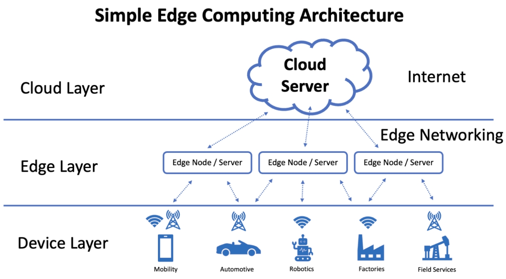
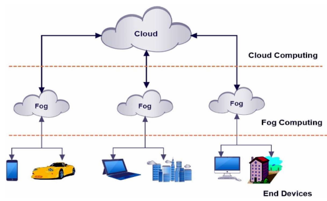
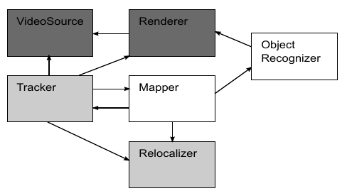

Edge, fog, continuum computing
Aleksandar Stojanović
Ograničenja klasičnih i cloud arhitektura
Nagli rast broja IoT uređaja u poslednjih nekoliko godina (kućni aparati, industrijski senzori...) prouzrokuje:
- Zagušenje mreže
- Povećanu latenciju
- Energetske gubitke
Takođe, uploadovanje osteljivih informacija na cloud je rizično, a u nekim slučajevima i zabranjeno.
Edge computing
Šta je edge?
Kako je to nova ideja?
Osnovne karakteristike
- Blizina izvora podataka
- Decentralizacija
Arhitektura
Primene
- Prediktivno održavanje mašina u pogonima
- Video nadzor podržan veštačkom inteligencijom
- Prenos događaja uživo
Fog computing
- Unapređenje edge computinga
-
Uvode se fog čvorovi koji se nalaze između edge i cloud sistema
- Tehnički, ekstenzija cloud-a koja je mnogo bliža krajnjim uređajima
- Očuvana brza komunikacija sa niskom latencijom, kao i bezbednost
- Omogućene resursno zahtevnije obrade podataka (delegiranje fog čvorovima)
- Veća mogućnost geografskog rasprostiranja
Arhitektura
Primene
- Autonomna vozila
- Pametne kuće
Computing continuum
- Evolucija prethodne 2 paradigme
- Edge, fog i cloud computing integrisani u jedan kohezivan sistem
- Mobilni, IoT uređaji, razni senzori
- Sveprisutna mreža uređaja na koju se povezuje bez razmišljanja o pozadinskoj implementaciji
Karakteristike
- Omogućava funkcionisanje efikasnih, real time i dinamičkih računskih procesa
-
Distribuiranje opterećenja širom uređaja unutar mreže
- Delegiranje posla na osnovu blizine, procesne moći i prioriteta
- Real time obrada na edge, a kompleksna analiza na fog i cloud uređajima
- Brže vreme obrade
- Povećana skalabilnost
Arhitektura

Primene
- Pametni gradovi
- Zdravstvo
Obezbeđivanje otpornosti na otkaz u zdravstvenim ustanovama
U zdravstvenim ustanovama, zahteva se besprekoran rad aplikacije. Ove aplikacije upravljaju kritičnim zadacima kao što su čuvanje podataka o pacijentima, praćenje njihovog trenutnog stanja i davanje lekova. Svaki zastoj ili kvar može direktno uticati na negu i bezbednost pacijenata.
Cloud rešenje
- Skalabilnost i lakoća upravljanja
- Kašnjenje, nepouzdanost mreže i bezbednosti osetljivih podataka pacijenata
- Potpuni prekid rada aplikacije u slučaju otkaza cloud servera
Fog rešenje
- Korišteni senzorski i serverski uređaji u neposrednoj blizini zdravstvene ustanove
- Raspberry Pi 4
- Osluškivanje cloud servera i u slučaju pada, premoštavanje saobraćaja na lokalni server i repliciranu bazu podataka
- Lokalnost uređaja minimizuje latenciju i mogućnost prekida veze
Glavni moduli
-
Detekcija otkaza cloud servera
- Python skripta koja šalje heartbeat signal cloud serveru na svakih 5 sekundi
- Replikacija podataka i servisa
- Delegiranje posla fog čvoru
Replikacija servisa i baze podataka
- Cold replika
-
Sadrži samo neophodne servise za rad aplikacije
- Apache Tomcat servis
- Java Swing aplikacija
- MySQL baza podataka
- Lokalna baza podataka periodično se ažurira u odnosu na glavnu bazu
Delegiranje posla

Augmented reality offloading
Zadatak i problemi
- Detekcija i obeležavanje objekata snimljenih kamerom mobilnog uređaja

- Mobilni uređaji nemaju dovoljno resursa neophodnih za real time procesiranje
- Delegiranje posla na cloud, prouzrokuje spor odziv
Razlaganje aplikacije na izolovane procese
- Različiti hardverski zahtevi
- Implementirani u Javi radi portabilnosti (OSGi SO sistem za upravljanje modulima)
- Procesi koji su kritični po performanse implementirani pomoću C/C++
- Moguće definisanje zahteva za određene performanse procesa (najčešće brzine izvršavanja) pomoću XML šeme
Cloudlet arhitektura

- Međusobna komunikacija pomoću RPC protokola